전자기사 (2016-03-06 기출문제)
1과목: 전기자기학
1. 무한히 넓은 평면 자성체의 앞 a[m] 거리의 경계면에 평행하게 무한히 긴 직선 전류 I[A]가 흐를 때, 단위 길이당 작용력은 몇 [N/m]인가?
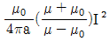
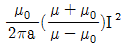
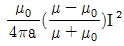
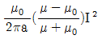
(정답률: 44%)

2. 전선을 균일하게 2배의 길이로 당겨 늘였을 때 체적이 불변이라면 저항은 몇 배가 되는가?
- 2
- 4
- 6
- 8
(정답률: 65%)
3. 대지면 높이 h[m]로 평행하게 가설된 매우 긴 선전하(선전하 밀도 λ[C/m])가 지면으로부터 받는 힘[N/m]은?
- h 비례한다.
- h에 반비례한다.
- h2에 비례한다.
- h2에 반비례한다.
(정답률: 74%)
4. 자속밀도가 10[Wb/m2]인 자계 내의 길이 4[cm]의 도체를 자계와 직각으로 높고 이 도체를 0.4초 동안 1[m]씩 균일하게 이동하였을 때 발생하는 기전력은 몇 [V] 인가?
- 1
- 2
- 3
- 4
(정답률: 70%)
5. 그림과 같이 공기 중에서 무한평면도체의 표면으로부터 2[m]인 곳에 점전하 4[C]이 있다. 전하가 받는 힘은 몇 [N]인가?
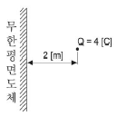
- 3×109
- 9×109
- 1.2×109
- 3.6×109
(정답률: 54%)
6. 반지름 a[m]인 구대칭 전하에 의한 구내외의 전계의 세기에 해당되는 것은? (문제 오류로 실제 시험에서는 1, 4번이 정답처리 되었습니다. 여기서는 1번을 누르면 정답 처리 됩니다.)
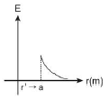
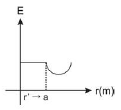
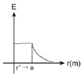
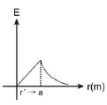
(정답률: 69%)
7. 반지름이 3[m]인 구에 공간 전하밀도가 1[C/m3]가 분포되어 있을 경우 구의 중심으로부터 1[m]인 곳의 전위는 몇 [V]인가?
- 1/2Є0
- 1/3Є0
- 1/4Є0
- 1/5Є0
(정답률: 62%)
8. 한 변의 길이가 3[m]인 정삼각형의 회로에 2[A]의 전류가 흐를 때 정삼각형 중심에서의 자계의 크기는 몇 [AT/m]인가?
- 1/π
- 2/π
- 3/π
- 4/π
(정답률: 67%)
9. 한 변의 길이가 1[m]인 정삼각형 회로에 전류 I[A]가 흐르고 있을 때 삼각형 중심에서의 자계의 세기[AT/m]는?
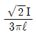
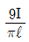
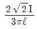
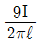
(정답률: 47%)
10. 전기 쌍곡자에 관한 설명으로 틀린 것은?
- 전계의 세기는 거리의 세제곱에 반비례한다.
- 전계의 세기는 주위 매질에 따라 달라진다.
- 전계의 세기는 쌍극자모멘트에 비례한다.
- 쌍극자의 전위는 거리에 반비례한다.
(정답률: 57%)
11. 서로 멀리 떨어져 있는 두 도체를 각각 V1, V2의(V1＞V2) 전위로 충전한 후 가느다란 도선으로 연결하였을 때 그 도선에 흐르는 전하 Q[C]는? (단, C1, C2는 두 도체의 정전용량이다.)
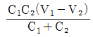
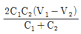
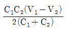
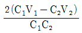
(정답률: 65%)
12. 비투자율 800, 원형단면적 10[cm2], 평균자로의 길이 30[cm]인 환상철심에 600회의 권선을 감은 코일이 있다. 여기에 1[A]의 전류가 흐를 때 코일 내에 생기는 자속은 약 몇 [Wb]인가?
- 1×10-3
- 1×10-4
- 2×10-3
- 2×10-4
(정답률: 75%)
13. 전류가 흐르고 있는 도체와 직각방향으로 자계를 가하게 되면 도체 측면에 정ㆍ부의 전하가 생기는 것을 무슨 효과라 하는가?
- 톰슨(Thomson) 효과
- 펠티에(Peltier) 효과
- 제벡(Seebeck) 효과
- 홀(hall) 효과
(정답률: 46%)
14. 벡터A=5e-rcosøar, A=-5e-rcosøaz가 원통좌표계로 주어졌다 점(2, 3π/0, 0)에서의 ∇×A를 구하였다. a2의 계수는?
- 2.5
- -2.5
- 0.34
- -0.34
(정답률: 28%)
15. 송전선의 전류가 0.01초 사이에 10[kA] 변화될 때 이 송전선에 나란한 통신선에 유도되는 유도전압은 몇 [V]인가? (단, 송전선과 통신선 간의 상호유도계수는 0.3[mH]이다.)
- 30
- 3×102
- 3×103
- 3×104
(정답률: 78%)
16. 극판간격 d[m], 면적 S[m2], 유전율 ε[F/m]이고 정전용량이 C[F]인 평행판 콘덴서에 v=Vmsinωt[V]의 전압을 가할 때의 변위전류[A]는?
- ωCVmcosωt
- CVmsinωt
- -CVmsinωt
- -ωCVmcosωt
(정답률: 55%)
17. 내부저항이 r[Ω]인 전지 M개를 병렬로 연결했을 때, 전지로부터 최대 전력을 공급받기 위한 부하저항[Ω]은?
- r/M
- Mr
- r
- M2r
(정답률: 77%)
18. 인덕턴스가 20[mH]인 코일에 흐르는 전류는 0.2초 동안에 2[A] 변화했다면 자기유도현상에 의해 코일에 유기되는 기전력은 몇 [V]인가?
- 0.1
- 0.2
- 0.3
- 0.4
(정답률: 74%)
19. 판 간격이 d인 평행판 공기콘덴서 중에 두께 t이고, 비유전율이 εs인 유전체를 삽입하였을 경우에 공기의 절연파괴를 발생하지 않고 가할 수 있는 판 간의 전위차는? (단, 유전체가 없을 때 가할 수 있는 전압을 V라 하고 공기의 절연내력은 Eo라 한다.)
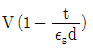
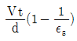
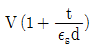
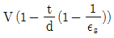
(정답률: 44%)
20. 변위전류밀도와 관계없는 것은?
- 전계의 세기
- 유전율
- 자계의 세기
- 전속밀도
(정답률: 48%)
2과목: 회로이론
21. 100[V]의 교류전압을 인가했을 때 입력전류 I의 크기는?
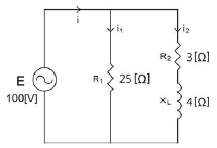
- 4[A]
- 12-j16[A]
- 16(1+j)[A]
- 16√2[A]
(정답률: 56%)
22. 4단자 회로망에 있어서 4단자 정수(또는 ABCD파라미터) 중 정수 A와 C의 정의가 옳은 것은?
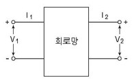
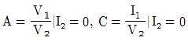
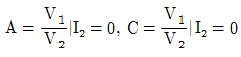
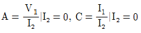
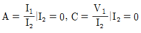
(정답률: 62%)
23. 점선으로 표시된 부분의 부하에서 소모되는 평균전력은? (단, i1=5√2 sin 2t이다.)(오류 신고가 접수된 문제입니다. 반드시 정답과 해설을 확인하시기 바랍니다.)
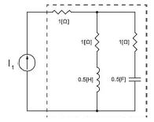
- 약 50[W]
- 약 75[W]
- 약 100[W]
- 약 150[W]
(정답률: 16%)
24. 이상변압기의 합성인덕턴스는 얼마인가? (단, L1= 6H, L2= 24H)
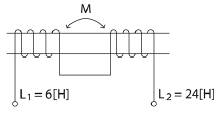
- 24[H]
- 36[H]
- 54[H]
- 68[H]
(정답률: 69%)
25. 다음 그림과 같은 정저항 회로가 되려면 ωL의 값[Ω]은?
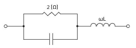
- 1.2
- 1.6
- 0.8
- 0.4
(정답률: 24%)
26. 두 4단자 회로를 연결했을 때 전체 임피던스 파라미터가 각각의 임피던스 파라미터의 합으로 표시되었다면 두 4단자 회로는?
- 병렬 접속되어 있다.
- 직렬 접속되어 있다.
- 직병렬 접속되어 있다.
- 병직렬 접속되어 있다.
(정답률: 58%)
27. 주파수 영역에서의 미분[dF/dw]은 시간 영역에서 어떻게 표현되는가?
- f(t)에 -jt를 곱한 것과 같다.
- f(t)에 jt를 곱한 것과 같다.
- f(t)에 -(1/jt)를 곱한 것과 같다.
- f(t)에 (1/jt)를 곱한 것과 같다.
(정답률: 38%)
28. 단위 계단함수 u(t-a)의 그림으로 옳은 것은?
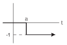
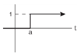
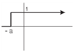
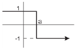
(정답률: 59%)
29. 다음 회로망 그래프에서 가지 1, 2, 5로서 나무를 선택할 때 컷셋[cut-set]은?
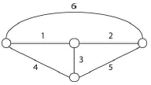
- {1, 2, 3}
- {1, 4, 6}
- {2, 5, 6 1}
- {1, 3, 5}
(정답률: 42%)
30. 1[H]인 인덕터에 그림과 같은 전류가 흐를 때 전압 파형은?
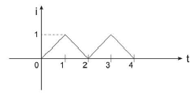
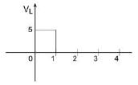
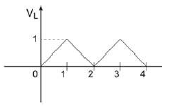
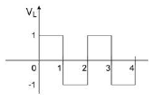
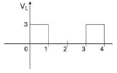
(정답률: 56%)
31. 형광등에 100[V]를 가했을 때, 0.5[A]의 전류가 흐르고 그 소비전력은 40[W]이었다면, 이 형광등의 역률은?
- 0.5
- 0.6
- 0.7
- 0.8
(정답률: 58%)
32. 필터의 분류가 다른 하나는?(오류 신고가 접수된 문제입니다. 반드시 정답과 해설을 확인하시기 바랍니다.)
- 1/(1+s/102)
- 1/(1+s/102)2
- 1/(1+s/102)(1+s/104)
- 1/(1+s/103)(1+s/104)
(정답률: 27%)
33. 다음 파형의 t=1초에서의 컨볼루션(Convolution)의 값은? (단, h(t)는 임펄스 응답이다.)
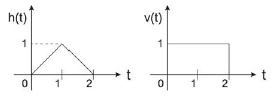
- 2
- 1
- 3/2
- 1/2
(정답률: 25%)
34. 키르히호프의 제 2법칙에 대한 설명으로 옳은 것은? (단, 주어진 회로는 집중회로이다.)
- 비선형, 시변 회로에도 적용된다.
- 선형, 시변 회로에만 적용된다.
- 선형, 시불변 회로에만 적용된다.
- 비선형, 시불변 회로에만 적용된다.
(정답률: 23%)
35. 1[dB]를 neper 단위로 변화하면 약 얼마인가?
- 0.115
- 0.521
- 7.076
- 8.686
(정답률: 29%)
36. 그림의 회로에서 스위치 S를 t=0에서 닫았을 때 (VL)t=0=50[V], (di/dt)=100[A/sec]라면 L의 값은 얼마인가?
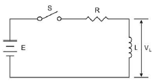
- 0.5[H]
- 0.75[H]
- 1[H]
- 2[H]
(정답률: 69%)
37. 함수 x(t)=2e-2(t-3)u(t-3)의 라플라스 변환식 X(s)는?
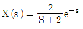
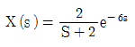
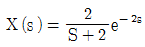
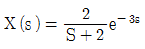
(정답률: 43%)
38. 다음 그림과 같은 극(pole)과 영점(zero)을 갖는 함수는?
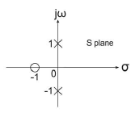
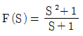
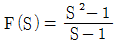
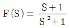
(정답률: 44%)
39. t=0일 때 스위치를 닫으면 C에 걸리는 전압의 과도현상을 표현한 것은?
(정답률: 50%)
40. 내부 임피던스가 순저항 50[Ω]인 전원과 450[Ω]의 순저항 부하 사이에 임피던스 정합을 위한 이상 변압기의 권선비 N1 : N2는?
- 1:2
- 1:3
- 2:3
- 1:4
(정답률: 67%)
3과목: 전자회로
41. 다이오드 직선 검파회로에서 변조도 50[%], 진폭 10√2[V]인 피변조파가 인가되었을 때 부하저항에 나타나는 변조 신호파 출력 전압은? (단, 검파 효율은 80[%]이다.)
- 0.4[V]
- 0.8[V]
- 1.2[V]
- 4[V]
(정답률: 36%)
42. 전달 컨덕턴스 증폭기(trans conductance amplifier)의 이상적 특성으로 옳은 것은? 단 (Ri는 증폭기 입력저항, R0는 출력저항이다.)
- Ri=0, R0=0
- Ri=0, R0=무한대
- Ri=무한대, R0=0
- Ri=무한대, R0=무한대
(정답률: 24%)
43. 연산증폭기의 입출력 전압 특성이 그림과 같을 때, DC 오프셋 전압은?
- -2[mV]
- -1[mV]
- 2[μV]
- 1[μV]
(정답률: 48%)
44. JFET에서 포화 드레인 전류(IDS)를 나타낸 식은? (단, IDS는 VGS=0일 때 드레인 전류이다.)
(정답률: 39%)
45. MOSFET의 포화영역 동작모드와 유사한 BJT의 동작모드는?
- 활성 영역
- 차단 영역
- 역활성 영역
- 포화 영역
(정답률: 23%)
46. 회로에서 입력부 필터와 주파수 응답곡선으로 맞는 것은?
(정답률: 36%)
47. 그림의 전계효과 트랜지스터(FET) 전압병렬 귀환증폭회로에서 귀환이 없는 경우와 있는 경우의 전압이득 Av와 Avf는? (단, gm=5[ms], RD=5[kΩ], RS=5.1[kΩ], RF=20[kΩ]이다.)
- Av=-35.5, Avf=-21.2
- Av=-25.5, Avf=-11.2
- Av=-45.5, Avf=-31.2
- Av=-55.5, Avf=-41.2
(정답률: 19%)
48. 그림에서 전파정류 된 평균 전압값은?
- 4.77[V]
- 7.50[V]
- 9.55[V]
- 15.00[V]
(정답률: 48%)
49. 멀티바이브레이터(Multi-Vibrator)에서 비안정, 단안정, 쌍안정의 구별은 무엇에 의하여 결정되는가?
- 전원 전압의 크기
- 바이어스 전압의 크기
- 결합 회로의 구성
- 증폭기의 단수
(정답률: 53%)
50. 발진조건에 대한 설명으로 틀린 것은?
- βA의 크기가 1이어야 한다.
- βA의 phase는 항상 180°를 유지해야 한다.
- 실제 회로에서는 βA의 값을 1보다 작게 설계한다.
- 바크하우젠 정리(Barkhausen Criterion)에 의해 결정된다.
(정답률: 28%)
51. 수정 발진기의 주파수 안정도가 양호한 이유가 아닌 것은?
- 수정면의 Q가 매우 높다.
- 지수정 진동자는 기계적으로 안정하다.
- 유도성 주파수 범위가 매우 좁다.
- 부하 변동의 영향을 전혀 받지 않는다.
(정답률: 53%)
52. 어떤 차동증폭기의 동상신호제거비(CMRR)가 86[dB]이고 차신호에 대한 전압이득(Ad)이 100,000이라고 할 때, 이 차동증폭기의 동상신호에 대한 이득(Ac)은 얼마인가?(오류 신고가 접수된 문제입니다. 반드시 정답과 해설을 확인하시기 바랍니다.)
- 5
- 10
- 50
- 100
(정답률: 25%)
53. 공통이미터 회로의 입출력 전압 특성이 그림과 같을 때 활성영역에서의 전압이득은?
- -1.94
- -2.72
- -10.33
- -14.70
(정답률: 48%)
54. 연산증폭회로에서 출력전압 e0의 관계식은? (단, R1=R3, R2=R4)
(정답률: 58%)
55. 다음 회로의 출력 Y에 대한 논리식은?
(정답률: 14%)
56. n 채널 증가형 MOSFET에서 vDS[V]일 때의 전류 iD와 vDS=1[V]일 때의 전류 의 차는 몇 [mA]인가? (단, Vt=1[V]이고, kn(W/L)=0.⑤[mA/V2], vGS=3[V]이다.)
- 0.025
- 0.125
- 0.25
- 0.50
(정답률: 15%)
57. 를 간략화하면?
- A+B
(정답률: 56%)
58. 양(+)의 클램프에서 120[Vrms] 사인과 신호가 입력으로 인가될 때 출력전압의 AC 교류성분의 크기는 약 몇 [V]인가?
- 119.3[V]
- 170[V]
- 60[V]
- 75.6[V]
(정답률: 34%)
59. 그림과 같은 제너 다이오드를 이용한 회로에서의 입ㆍ출력 특성으로 옳은 것은? (단, 입력은 Vi, 출력은 Vo, 제너전압은 Vz로 정의한다.)
(정답률: 57%)
60. MOSFET에서 채널길이 변조(Channel Length Modulation)와 유사한 BJT 소자 특성은?
- 도핑(doping)
- 얼리효과(early effect)
- 포화(saturation)
- 전위장벽(potential barrier)
(정답률: 32%)
4과목: 물리전자공학
61. 상온에서 계단형 pn 접합 다이오드에서 p영역과 n영역에서의 불순물 농도가 각각 1018[cm-3], 1015[cm-3]일 때 접속 전위차는 몇 [V]인가? (단, 진성캐리어 밀도 ni=1.5 × 1010[cm-3], kT/q=0.0259[V]이다.)
- 0.657
- 6.57
- 0.754
- 7.54
(정답률: 34%)
62. 반도체의 에너지 대역에 대한 설명으로 틀린 것은?
- 자유전자는 연속적인 에너지 값을 갖는다.
- 결정내의 에너지 대역은 결정격자의 주기적인 배열에 의해 생긴다.
- 속박 입자의 에너지는 양자화 된다.
- 반도체의 광흡수 특성은 불순물 농도에 무관하다.
(정답률: 27%)
63. 바이폴라 트랜지스터 차단 주파수 fT를 나타낸 것으로 옳은 것은? (단, fβ는 베타 차단 주파수, β0는 저주파 영역에서의 hfe이다.)
(정답률: 42%)
64. 평형상태의 트랜지스터에 대한 설명으로 틀린 것은?
- 세 단자가 접속되지 않은 상태이다.
- 페르미 준위는 이미터 쪽이 제일 높다.
- 다수캐리어는 확산운동을 한다.
- 소수캐리어는 표동운동을 한다.
(정답률: 35%)
65. 광전자 방출에서는 한계 주파수 f0을 나타내는 것으로 옳은 것은? (단, W는 금속체의 일함수, h는 Plank 정수이다.)
- f0=W/h
- f0=W×h
- f0=h/W
- f0=W+h
(정답률: 31%)
66. 평행평판의 전극 간에 10[V]의 전압이 가해졌을 때 초기속도 0으로 음극에서 출발한 전자가 양극에 도달하는데 걸리는 시간은 몇 초인가? (단, 전극간의 거리는 1[cm], 전자의 질량은 9.1×10-31[kg], 전자의 전하는 e=1.602×10-19 [C]이다.)
- 약 1.07×10-7
- 약 1.07×10-8
- 약 1.07×10-6
- 약 1.07×10-9
(정답률: 19%)
67. 같은 운동량을 가진 두 개의 하전 입자 a, b가 균일한 자장 내에서 각각 ra, rb의 반지름을 갖는 원운동을 하고 있다. ra=2rb이라고 한다면 a의 전하 qa와 b의 전하 qb 사이의 관계 중 옳은 것은?
- qa=2qb
- qb=2qa
- qa=4qb
- qb=4qa
(정답률: 23%)
68. 동심 원통형 마그네트론(magnetron)에 100[V]의 양극전압을 인가할 경우 양극전류가 흐르지 않는 임계자속 밀도는 200Gauss이였다. 10[kV]의 양극 전압을 인가한 경우의 임계자속 밀도는 몇 Gauss 인가?
- 200
- 1000
- 2000
- 20000
(정답률: 22%)
69. 정전압 방전관은 어느 현상을 이용한 것인가?
- 암전류 방전
- 이상 글로우방전
- 정상 글로우방전
- 아크방전
(정답률: 40%)
70. 소신호 증폭회로에서 차단 주파수에 대한 설명으로 옳은 것은?
- 출력 전류 이득은 0이다.
- 출력 전류 이득은 1이다.
- 출력 전류 이득은 1보다 크다.
- 출력 전류 이득은 1보다 작다.
(정답률: 44%)
71. 반도체에서 전자와 정공의 생성과 재결합 문제를 취급할 때 가장 중요한 것은?
- 포획 불순물(trap)
- 온도에 의한 여기
- 반도체의 형태
- 순도가 높은 결정
(정답률: 42%)
72. 반도체에서의 확산 전류 밀도 J는? (단, n은 캐리어 농도, q는 캐리어의 전하, D는 확산정수, x는 거리이며, 1차원적인 구조의 경우로 가정한다.)
(정답률: 55%)
73. n 채널 MOSFET의 구조에 대한 설명으로 옳은 것은?
- pnpn 구조로 되어 있다.
- 금속과 pnp 구조로 되어 있다.
- 금속과 pn 접합으로 되어 있다.
- 금속과 산화물 절연체와 반도체로 되어 있다.
(정답률: 48%)
74. 접합을 흐르는 소수캐리어에 가장 큰 영향을 주는 것은?
- 전위 장벽의 크기
- 순방향 전압의 크기
- 도핑하는 불순물 농도
- 열에 의해 발생되는 전자와 정공의 발생률
(정답률: 43%)
75. 질량 m, 광속도 c인 입자의 드브로이 물질파(de Broglie matter wave)의 진동수 f는? (단, h는 프랑크 상수이다.)
- mc/h
- mc2/h
- 1/mc2h
- m/hc2
(정답률: 32%)
76. LASER와 MASER와 근본적으로 다른 점은?
- 유도 방출에 의한다.
- 펌핑(pumping)에 의한다.
- 광의 증폭 및 발진에 이용된다.
- 반전 분포(population inversion)에 의한다.
(정답률: 50%)
77. 페르미-디랙 분포(Fermi-Dirac distribution)에서 T=0[K]일 때 분포 한수의 성질로 옳은 것은?
- f(E)=1, E＜Ef
- f(E)=1/2, E＞Ef
- f(E)=0, E＜Ef
- f(E)=1, E＞Ef
(정답률: 43%)
78. Hall 효과에 대한 설명 중 틀린 것은?
- Hall 계수는 이동도에 비례한다.
- Hall 계수는 캐리어 농도에 반비례한다.
- 금속이나 n형 반도체의 Hall 계수는 음이다.
- 응용으로는 전력계, 자속계, 캐리어 농도 측정 등이 있다.
(정답률: 28%)
79. 파울리(Pauli)의 배타원리에 관한 내용 중 원자내 전자 상태를 잘못 표현한 것은?
- 원자내 전자는 4개의 양자수로 표현된다.
- 전자배치도의 s, p, d, f, ……는 부양자수를 나타낸다.
- 모든 전자의 스핀양자수는 +1/2 혹은 -1/2 이다.
- 주양자수가 3일 때, 자기양자수는 0, 1, 2, 3이다.
(정답률: 63%)
80. 광전자방출에 관한 특징과 거리가 먼 것은?
- 방출전자의 흐름은 빛의 세기에 비례한다.
- 방출전자의 초속도는 빛의 세기와 주파수에 의하여 변화된다.
- 빛을 조사한 즉시 전자가 방출한다.
- 방출전자의 흐름 및 속도는 광범한 온도 범위에서 온도에 관계없이 일정하다.
(정답률: 23%)
5과목: 전자계산기일반
81. 16비트의 명령어에서 4비트의 연산코드(OP code)를 사용하고, 오퍼랜드(Operand)가 메모리의 주소일 때, 최대 지정 가능한 메모리의 주소의 수는?
- 16
- 256
- 1024
- 4096
(정답률: 53%)
82. C 언어에 관한 설명으로 틀린 것은?
- C 언어의 기원은 ALGOL에서 찾을 수 있다.
- 뛰어난 이식성을 가지고 있다.
- 분할 컴파일이 가능하다.
- 비트 연산을 지원하지 않는다.
(정답률: 53%)
83. JAVA 같은 객체지향 언어의 개념에서 객체가 메시지를 받아 실행해야 할 구체적인 연산을 정의한 것은?
- 클래드
- 인스턴스
- 메소드
- 상속자
(정답률: 69%)
84. 부동소수점 표시(Floating-Point Representation) 방법에서 기수의 소수점 이하 첫째자리가 0이 되지 않도록 하는 과정은?
- Standardization
- Alignment
- Normalization
- Segmentation
(정답률: 50%)
85. 소프트웨어적으로 인터럽트의 우선순위를 결정하는 인터럽트 형식은?
- 폴링 방법
- 벡터 방식
- 슈퍼바이저 콜
- 데이지체인 방법
(정답률: 64%)
86. 1024 Word의 RAM은 몇 개의 어드레스 선을 갖는가?
- 4
- 8
- 10
- 12
(정답률: 38%)
87. 1의 보수로 음수를 표현하는 시스템에서 2진수 01101-11011의 결과로 올바른 것은?
- 11001
- 00111
- 11100
- 01110
(정답률: 56%)
88. C 언어 입출력 함수가 아닌 것은?
- printf( )
- scanf( )
- gets( )
- atoi( )
(정답률: 37%)
89. CPU와 입ㆍ출력 장치간의 속도 차이로 발생되는 성능의 차이를 극복하기 위한 방법이 아닌 것은?
- Pipeline
- Interrupt
- Off-line
- Buffer
(정답률: 15%)
90. 다음 명령어의 실행 주기에 해당하는 연산은?
- 덧셈(ADD)
- 뺄셈(SUB)
- 로드(LDA)
- 스토어(STA)
(정답률: 29%)
91. 가상기억장치(Virtual Memory)에 관한 설명으로 틀린 것은?
- 보조기억장치와 같이 기억용량이 큰 기억장치를 마치 주기억장치처럼 사용하는 개념이다.
- 중앙처리장치에 의해 참조되는 보조기억장치의 가상주소는 주기억장치의 주소로 변환되어야 한다.
- 메모리 매핑(Mapping)에는 페이지(Page)에 의한 매핑과 세그먼트(Segment)에 의한 매핑으로 구분된다.
- 실행될 프로그램의 크기가 주기억장치의 용량보다 작을 때 사용한다.
(정답률: 34%)
92. 그림의 병렬 가산기에서 출력되는 F의 값은? (단, 여기에서 B는 B의 1의 보수이며, 음수는 2의 보수로 표현한다.)
- A-B
- A-B+1
- A-B-1
- A-1
(정답률: 36%)
93. 분산처리 시스템의 장점이 아닌 것은?
- 처리 속도의 증가
- 가격대 성능비의 향상
- 소프트웨어 개발 시간의 단축
- 오류 허용(Fault-tolerant) 시스템의 개발
(정답률: 29%)
94. 해밍 코드(Hamming Code)에 대한 설명으로 옳지 않은 것은?
- 오류검출과 교정이 가능하다.
- 2bit의 오류검출은 가능하나, 1bit의 오류수정은 불가능하다.
- 정보가 4bit이면, 해밍코드는 7bit가 된다.
- 패리티 비트의 위치는 1,2,4,8,16 ‥‥ 이다.
(정답률: 48%)
95. CPU의 제어장치에 관한 설명으로 옳은 것은?
- 처리할 자료를 입력받아 컴퓨터가 이해하도록 주기억장치로 보내는 기능이다.
- 처리된 결과를 사용자가 이용할 수 있도록 출력하는 기능이다.
- 입력장치를 통하여 입력되는 정보를 임시로 저장하는 기능이다.
- 주기억장치의 명령에 따라 각 장치를 지시하고 통제하는 기능이다.
(정답률: 43%)
96. 주기억장치에서 저장할 위치를 지정하는 것은?
- 레코드(Record)
- 어드레스(Address)
- 워드(Word)
- 바이트(Byte)
(정답률: 48%)
97. 다음 C 언어로 구현한 프로그램의 출력 결과는?
- 결과 : 10 10
- 결과 : 10 20
- 결과 : 20 10
- 결과 : 20 20
(정답률: 34%)
98. I/O 제어기의 주요기능에 대한 설명으로 틀린 것은?
- I/O 장치의 제어와 타이밍을 조정한다.
- CPU와의 통신을 담당한다.
- 데이터 구성 기능을 수행한다.
- I/O 장치와의 통신을 담당한다.
(정답률: 23%)
99. ROM 회로의 구성요소로 옳은 것은?
- Decoder, OR gate
- Encoder, OR gate
- Encoder, AND gate
- Decoder, AND gate
(정답률: 36%)
100. 주소를 기억하고 있는 레지스터와 관계없는 것은?
- MAR
- IR
- PC
- SP
(정답률: 48%)